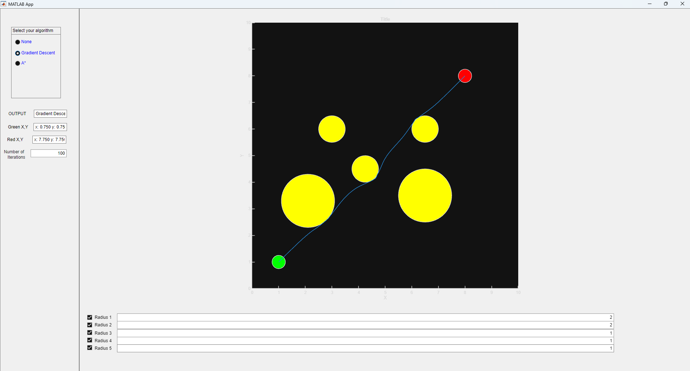
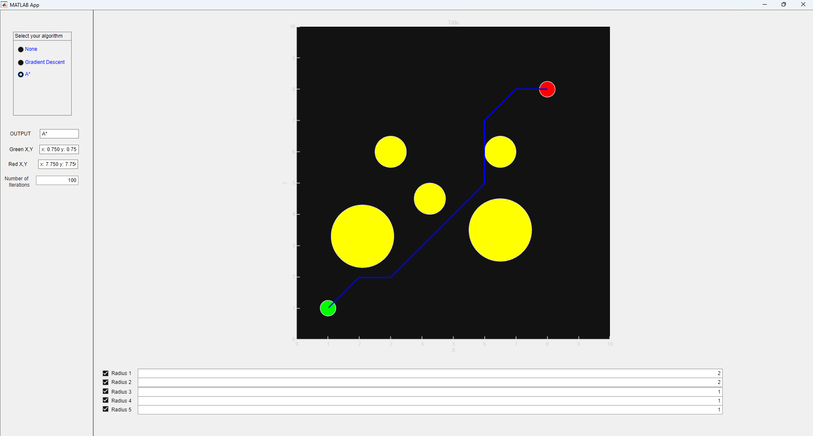

Multivariable Calculus Final Project
Gradient Descent App
I built a MATLAB path planner that uses gradient descent to route around obstacles, then compared it against an A* baseline.


Overview
This project started as a simple question: could I make a path improve itself using the same calculus tools we were learning in class? I represented the route as a chain of vertices between a start and goal, then optimized those points with a cost function that rewarded shorter paths while pushing the route away from obstacles.
The final app made the tradeoffs visible. Gradient descent produced smoother paths, but it could get stuck depending on the starting guess. A* was less smooth, but it gave me a reliable baseline for checking whether the planner was finding a reasonable route through the map.
Implementation highlights
I treated the planner less like a single formula and more like a set of competing forces. Each term in the cost function had a job, and tuning those terms changed the personality of the path.
- Balanced path length, obstacle clearance, and vertex spacing in one composite objective.
- Used distance-based obstacle penalties so the path had useful gradients before it hit a wall.
- Added adaptive step sizing and a minimum step magnitude to keep the optimizer from stalling too early.
- Increased the number of path vertices so long segments would not quietly cut through obstacles.
- Implemented A* as a comparison point for connectivity, path quality, and failure cases.
What broke first
The most interesting parts were the failures. My first obstacle penalty behaved too much like a cliff: once the path was far enough away, the optimizer had almost no signal about where to go. Switching to a smoother distance-scaled penalty gave the route something useful to follow.
I also ran into a sneaky geometry problem. The vertices could all sit outside the obstacles while the line segments between them still crossed through blocked space. Adding a vertex-spacing term and increasing resolution made the path behave more like a continuous curve instead of a few disconnected points.
- Local minima: straight-line seeds sometimes settled into poor routes, which made initialization matter more than I expected.
- Slow convergence: small gradients near a minimum made the path look frozen, so I added adaptive scaling to keep updates visible.
- Benchmarking: A* helped separate planner bugs from the natural tradeoff between smooth continuous optimization and grid-based search.
Source
The source code and MATLAB app are available here: github.com/Zaraius/path-planning-obstacles.